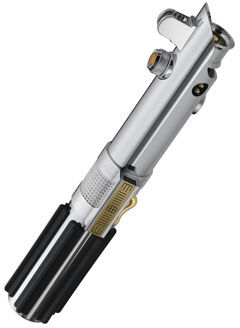

General information
Anakin Skywalker was a legendary Force-sensitive human male who was a Jedi Knight of the Galactic Republic and the prophesied Chosen One of the Jedi Order, destined to bring balance to the Force. Also known as "Ani" during his childhood, Skywalker earned the moniker "Hero With No Fear" from his accomplishments in the Clone Wars. His alter ego, Darth Vader, the Dark Lord of the Sith, was created when Skywalker turned to the dark side of the Force, pledging his allegiance to the Sith Lord Darth Sidious at the end of the Republic Era.
A vergence in the Force, Skywalker was born on the desert planet of Tatooine in the Outer Rim Territories in 41 BBY. He was the son of Shmi Skywalker, a slave who conceived a child without a father. His blood contained over twenty-thousand midi-chlorians, surpassing that of Grand Master Yoda and all other Jedi in the galaxy. Qui-Gon Jinn, the Jedi Master who discovered Skywalker during the Invasion of Naboo in 32 BBY, theorized that Skywalker was conceived by the midi-chlorians. Following the Battle of Naboo, the Jedi High Council admitted Skywalker into the Order as the Padawan of Jedi Knight Obi-Wan Kenobi despite feeling that he was too old and emotional to adhere to the Jedi Code. During the early days of the Clone Wars, Skywalker served as a Jedi General in the Grand Army of the Republic, commanding the clone troopers of the elite 501st Legion against the Confederacy of Independent Systems. He also oversaw the Jedi training of his own apprentice, Ahsoka Tano, after receiving his knighthood. Although Jedi doctrine prohibited personal relationships, Skywalker had a secret wife, Senator Padmé Amidala of Naboo.
In 19 BBY, Skywalker learned that Supreme Chancellor Sheev Palpatine was Darth Sidious, the elusive Dark Lord of the Sith who orchestrated the war in order to take over the galaxy. Palpatine manipulated Skywalker into believing that the Jedi were traitors and plotting to take over the Republic. This, coupled with his fear of losing Amidala in childbirth, caused him to betray and turn against the Jedi Order, believing Sidious had the knowledge to cheat death. Consumed by the persona of Darth Vader, the fallen Jedi Knight marched his legion on the Jedi Temple of Coruscant where they executed its inhabitants, including Jedi younglings, as part of Order 66 and the Great Jedi Purge. Vader was then sent to Mustafar to exterminate the Separatist Council at the behest of his Sith Master, now the self-proclaimed Galactic Emperor. Vader subsequently sustained severe injuries in his duel with Kenobi, and was rebuilt as an armored cyborg while his wife died of a broken heart, though not before giving birth to the twins Luke Skywalker and Princess Leia Organa who were hidden from their father and the Emperor as the Galactic Empire rose to power.
Vader enforced the rule of the New Order as the Emperor's Sith apprentice throughout most of the Imperial Era. In the aftermath of the Battle of Yavin in 0 BBY, he discovered the existence of his son and was determined to turn Luke to the dark side. Luke sought to become a Jedi, like his father before him, and believed that Vader had the potential to turn back to the light side of the Force. Vader was defeated by Luke during the Battle of Endor in 4 ABY, but the young Jedi refused to strike down his father in anger, causing the Emperor to torture Luke with Force lightning. The pain inflicted on his son awakened the part of Vader that was still Anakin, resulting in a redeemed Skywalker killing Sidious at the cost of his own life. Having destroyed the Sith and fulfilled his destiny as the Chosen One, Skywalker made peace with his son and became one with the Force.
Anakin Skywalker was one of the most powerful Jedi and Sith in galactic history. The Force was especially strong in the Skywalker bloodline, which culminated in Anakin's grandson, Ben Solo, Organa's son who was born by the end of the Galactic Civil War in 5 ABY. Solo would turn to the dark side as well, becoming the dark warrior Kylo Ren during the rise of the First Order. Like his grandfather, however, Solo found redemption by sacrificing his life for the love of another—the Jedi apprentice Rey, who heard Skywalker's voice telling her to restore the balance, as he once had, during the Battle of Exegol in 35 ABY. Solo's death ended the Skywalker bloodline, although Rey, the granddaughter of Sidious, rejected her true heritage and took their surname to honor their legacy.
Anakin Skywalker's lightsaber
Anakin Skywalker's second lightsaber was the weapon constructed and wielded by Jedi Knight Anakin Skywalker. Built as a replacement for Anakin's first lightsaber, it was carried by its creator throughout the Clone Wars and after Anakin turned against the Jedi Order by joining the Sith Lord Darth Sidious.
Incorporating many of the elements from his first weapon, Anakin Skywalker's lightsaber was specifically designed to facilitate Skywalker's practice of Form V lightsaber combat. As per Form V weapon specifications, the lightsaber had a solid casing (either as a whole or in multiple sections for maximum protection against power surge deterioration) and a heavily shrouded blade emitter. The beveled emitter was designed to designate separate facets of the blade for either offensive or defensive purposes. The lightsaber hilt included a ridged hand grip, as Djem So required its users to maintain a solid grip on the hilt.[7] It was also later modified to allow it to operate underwater.
Back to home